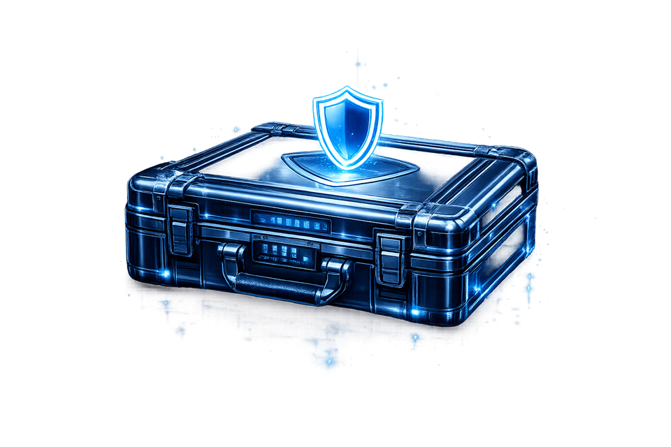

Formation
BTS Services Informatiques aux Organisations, option SISR, au Lycée René Cassin
de Strasbourg (2024-2026). Formation orientée systèmes, réseaux, cybersécurité,
virtualisation et support.
Baccalauréat général, section européenne, spécialités mathématiques et sciences
économiques et sociales, au Lycée Marcel Rudloff (2021-2024).

Cadre professionnel
Deux stages au SIS 67 - GSIC, à Wolfisheim, dans un environnement où la stabilité
des infrastructures et la continuité de service ont un impact direct sur l'activité opérationnelle.
Ce contexte m'a permis de consolider une pratique plus exigeante, avec plus de méthode,
de rigueur et de sens des priorités.